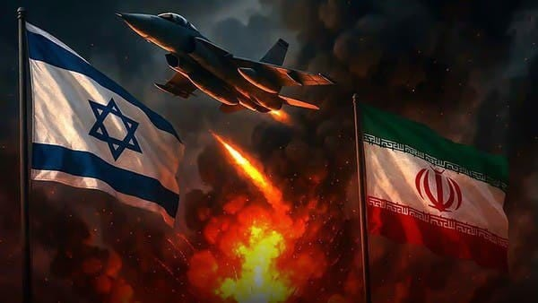

世界苦茶06月17日新闻 | 36条 | 美国中国均要求中东城市居民撤离

美国中国均要求中东城市居民撤离 | 美国派出大量军舰军机前往中东 | 俄罗斯空袭基辅造成较大伤亡 | OpenAI与微软就控制权发生矛盾
每天三件事：
苦茶数据
美元兑人民币：7.18（昨日7.18，前日7.19）
美元兑日元：145.00（昨日144.23，前日144.14）
上证指数：3387（昨日3388，前日3377）
标普500指数：6033（昨日5976，前日6045）
比特币：106860（昨日106656，前日106019）
布伦特原油：72.91（昨日74.95，前日74.23）
以伊战争
• 以伊互袭电视台演播室被炸 ：伊朗与以色列之间仍在相互袭击。伊朗伊斯兰共和国广播电视台16日遭到袭击，演播室传出爆炸并弥漫烟尘，电视台随后切到了预录节目。此前以色列对德黑兰市中心部分区域发布疏散警告，其中包括该电视台、警察总部以及三家大型医院。以色列声称对伊朗空域实现全面的空中优势，在伊朗中部摧毁了120多个导弹发射装置，约占伊朗拥有总数的三分之一。以色列战机还袭击了位于德黑兰的10个革命卫队指挥中心。伊朗指责以色列袭击位于西部克尔曼沙赫的法拉比医院，袭击造成医院建筑受损，有病人因此受伤。不过以色列军方表示对此不知情。伊朗16日早些时候再次对以色列发射导弹。以色列称，伊朗近日的袭击击中了以色列30个地点，造成24人死亡、592人受伤。其中一枚导弹落在美国驻特拉维夫领事馆附近，建筑物轻微受损。美国总统特朗普据报否决了以色列暗杀伊朗最高领袖哈梅内伊的计划。以色列总理内塔尼亚胡否认相关报道。
• 特朗普称伊朗愿谈判 ：美国总统特朗普说，伊朗希望就缓和与以色列的冲突进行谈判。双方已连续第四天交火。当被问及有关伊朗希望推动紧张局势解决的报道时，特朗普回应称“是的”、彭博社引述他说：“他们想谈，但他们之前就该这么做。”特朗普星期一（6月16日）在加拿大阿尔伯塔省卡纳纳斯基斯举行的七国集团领导人峰会期间，与加拿大总理卡尼会晤时，就美国会否进一步军事介入时说，他不愿讨论此事。“对双方都很痛苦，但我想说，伊朗在这场战争中并未占上风。”
• 伊朗求海湾国家施压美方 ：两名伊朗消息人士和三名地区消息人士星期一告诉路透社，德黑兰已要求卡塔尔、沙特阿拉伯和阿曼向美国总统特朗普施压。消息人士说，伊朗要求特朗普利用他对以色列的影响力，让以色列同意立即与伊朗停火，以换取德黑兰在核谈判中可能做出的让步。海湾国家领导人及高级外交官整个周末都在与德黑兰、华盛顿及其他地区保持联系，努力避免冲突扩大。
• 伊朗议会研退核不扩散条约 ：伊朗外交部星期一说，伊朗议会正在准备可能使德黑兰退出《不扩散核武器条约》的法案，同时重申了德黑兰反对发展核武器的官方立场。路透社报道，伊朗外交部发言人巴格哈伊在新闻发布会上，被问及德黑兰可能退出《不扩散核武器条约》时说：“鉴于最近的事态发展，我们将做出适当的决定。政府必须执行议会法案，法案正在准备中，我们后期将与议会协调。”伊朗1970年批准了《不扩散核武器条约》，条约保障各国发展民用核能的权利，条件是它们必须放弃核武器并与国际原子能机构合作。
• 特朗普在新的社交媒体帖子中敦促德黑兰所有人“立即”撤离，并表示伊朗不能拥有核武器。
• 阿尔巴尼斯与特朗普的会面因伊以战争被取消： 由于中东危机升级，美国总统特朗普被迫提前离开七国集团峰会，澳大利亚总理阿尔巴尼斯原定与其进行的首次会晤被取消，这意味着他至少要等到9月，才能就AUKUS防务协议向特朗普直接陈情。白宫新闻秘书卡罗琳·莱维特在阿尔巴尼斯于峰会期间举行新闻发布会时证实了特朗普的提前离席。当时，阿尔巴尼斯正介绍他本打算与特朗普讨论的议题，包括贸易与AUKUS。特朗普的决定对于阿尔巴尼斯来说是一大打击，他原计划于澳洲时间周三早上首次与特朗普面对面，重点强调澳大利亚在AUKUS潜艇协议中的防务贡献，以及美国在呼吁增加军费开支背景下的合作立场。
• 中国呼吁在以色列的公民“尽快撤离”： 中国驻以色列大使馆周二敦促在以中国公民“尽快离境”，此前以色列与伊朗之间爆发了猛烈的军事互击。大使馆在微信发布公告称：“中国驻以使馆提醒在以中国公民在确保人身安全前提下，尽快通过陆路口岸离境。”公告补充建议：“建议前往约旦方向撤离。”
• 美国调派军机与军舰前往中东，应对伊朗-以色列冲突： “保护美军力量是我们的首要任务，这些部署旨在加强我们在该地区的防御态势，”美国国防部官员赫格塞斯在社交平台X上表示。尽管他没有具体说明新增部署的力量内容，但美国官员周一向《新闻国度》证实，美国已向欧洲调动了大量空中加油机。该官员表示，这一举动旨在为特朗普提供“选项”，以应对不断升级的地区紧张局势。另一位国防官员也向《国会山报》确认，赫格塞斯已下令将“尼米兹号”航母打击群部署至中东，以维持美方防御姿态并保障美军人员安全。
中国新闻
• 习近平访哈释放抗美信号 ：中国国家主席习近平星期一抵达哈萨克斯坦出席中国—中亚峰会，由于这次峰会举行时间与七国集团峰会重叠，受访学者分析，此行对外释放与西方较劲的信号，北京或借深化与中亚国家合作，回应美国主导的围堵与制裁。习近平星期一搭乘专机抵达哈萨克斯坦首都阿斯塔纳，受到高规格接待。专机进入哈萨克斯坦领空后，哈萨克斯坦空军战机升空护航；托卡耶夫更率总统办公厅主任达杰拜、副总理兼外长努尔特列乌等高阶官员在场迎接。中国官媒新华社报道，习近平当天下午在阿斯塔纳总统府与托卡耶夫举行会谈。习近平在会谈中强调，面对变乱交织的国际形势，中哈双方要践行真正的多边主义，旗帜鲜明维护广大发展中国家共同利益。
• 港府提前发表施政报告 ：香港新一届立法会选举将在今年底举行，特区政府为此将首次提前在9月发表新一份《施政报告》。受访学者预计，由于香港经济不景气，今年《施政报告》除了继续加强国家安全领域的建设，也会着力提出发展经济的措施。港府星期一宣布，行政长官李家超将在9月发表任内第四份《施政报告》，并从即日起展开公众咨询。期间，港府将举办逾40场咨询会，听取立法会议员、不同界别代表和公众对《施政报告》的意见和建议。特首和各司局长也会走入社区探访市民和各界代表，直接听取意见。李家超说，香港经济正处于转型期，港府会继续带领社会各界守正创新、求进求变；积极发掘新增长点，开拓新市场、新蓝海，深化国际交往合作，做大做深区域合作，全力拼经济，谋发展。
• 成都高温预警升至红色 ：中国四川省成都市部分地区将迎来逾40摄氏度高温，气象台更新高温橙色预警信号为高温红色预警信号。“成都气象”官微星期一早上发布消息，指成都市东部新区的大部分镇今日最高气温将升至40摄氏度以上，高温时段主要出现在中午12时至晚上7时。气象台也预计，武侯区、锦江区、青羊区、成华区、金牛区、高新南区、高新西区和青白江区的所有镇今日最高气温将升至37摄氏度以上；高温也将持续至明天。 （翻评：6月到40度也太吓人了。）
• 中国核弹头增速全球最快 ：一家国际智库发布的报告显示，中国武器库存增速最快，自2023年起，北京每年增添100枚新核弹头。据路透社报道，瑞典斯德哥尔摩国际和平研究所星期一在世界最危险武器清单的年度报告中说，截至今年1月，全球的核弹头数量预计达1万2241枚，其中约9614枚在军事库存供潜在用途。约2100枚部署核弹头安置在处于高度运行警戒的弹道导弹上，近乎归美国或俄罗斯所有。SIPRI说，九个拥核国美国、俄罗斯、英国、法国、中国、印度、巴基斯坦、朝鲜和以色列因为全球紧张局势，都计划增加核武器库存。
• 中国驻伊大使馆暂停办公 ：以色列和伊朗冲突持续扩大，中国驻伊朗大使馆宣布暂停领事办证窗口对外办公。中国驻伊使馆在官网发布通知，使馆领事办证窗口将从星期天起暂停对外办公，恢复日期另行通知。以色列上星期五凌晨对伊朗发动大规模空袭，攻击伊朗核设施，并杀死多名伊朗高级军事将领和顶尖核科学家，德黑兰随后对以色列发动报复袭击。伊朗随后还以颜色，向以色列发射数百枚弹道导弹。
• 港官称爱国教育细水长流 ：香港政务司司长陈国基表示，爱国主义教育不能硬销学生，要以细水长流、深耕细作的方式，让学生体会和认同，让爱国成为自然的事。陈国基在香港电台星期一刊出的《上任三周年》系列专访中，谈到本届香港特区政府加强爱国主义教育工作。他评估过去几年工作的成效显著，并例举曾到访学校，听取学生讲解爱国主义教育，形容说得头头是道，反映相关工作有潜移默化作用。香港警务处国家安全处公布，台湾手机游戏《逆统战：烽火》涉宣扬“台独”“港独”、鼓吹武装革命等主张，已根据《香港国安法》就游戏的电子信息作出禁制行动。
• 全国人大会议审议多项草案 ：6月24至27日的全国人大常委会第16次会议，将三读《治安管理处罚法》修订案；二读《突发公共卫生事件应对法》《法治宣传教育法》草案，《渔业法》《民航法》《反不正当竞争法》修订草案；一读《医保法》《社会救助法》草案，村委会组织法修正、居委会组织法修订案，食品安全法修正案。审议关于2024年度中央预算执行和其他财政收支的审计工作报告。
亚太印太新闻
• 赖清德促台美共研军备 ：台湾总统赖清德星期一接见到访的美国联邦众议员时表示，希望台美安全合作从军购迈向“共同生产、共同研发”伙伴关系。根据台湾总统府新闻稿，赖清德当天接见美国众议院“国会台湾连线”共同主席贝拉访问团时强调，台湾有坚定不移的决心守护印太区域和平与稳定，过去一年来政府和民间合作积极提升“全社会防卫韧性”，今年的防务预算也能达到GDP的3%以上。他表示，希望台美安全合作能从“军事采购”迈向“共同生产、共同研发”伙伴关系，继续深化国防产业交流合作。
• 台北检方起诉伪造罢免案 ：台北地方检察署星期一侦结对罢免民进党立委吴思瑶和吴沛忆伪造连署文书案的调查，以违反《个资法》、《刑法》伪造文书等罪起诉涉案的国民党台北市党部主委黄吕锦茹等五人。综合台湾《联合报》和公视新闻网等报道，在侦结上述案件后，台北检方对黄吕锦茹、国民党台北市党部书记长初文卿、总干事姚富文、国民党台北市第四区党部执行长陈奎勋、吴思瑶罢免案召集人赖苡任等五人提出起诉。至于吴沛忆罢免案领衔人李孝亮、吴思瑶罢免案领衔人张克晋等九人，则因查无积极证据可证明知悉或参与此次伪造罢免案提议人名册，获台北检方裁定不起诉。另有18人暂缓起诉。
• 印航疑故障返航香港 ：印度航空一架从香港飞往印度首都新德里的飞机，据报疑似出现技术问题折返香港。据路透社引述消息人士报道，这架航班编号为AI315的波音787-8梦幻飞机起飞后，机师怀疑飞机有技术问题，所以为了安全起见折返香港。上星期四，印度航空公司一架原定从印度飞往英国的同款波音787-8型客机，在印度古吉拉特邦艾哈迈达巴德机场起飞后不久坠毁。印度媒体上星期六报道，坠机事故遇难人数已升至274人，其中包括33名地面人员。
• 洪森威胁禁泰农产品入境 ：柬埔寨人民党主席、参议院主席洪森星期一发表声明说，如果24小时内泰国军方仍未恢复柬泰边境正常通行，柬埔寨将从星期二起全面禁止泰国农产品入境。新华社报道，洪森在柬埔寨国家电视台直播的讲话中说，他和首相洪马内分别与泰国首相佩通坦通话，向泰方明确提出24小时期限，要求泰方立即恢复边境口岸正常通行，否则柬方将采取反制措施。洪森指责泰国军方单方面率先关闭口岸。他说，柬方只是被迫应对，恢复正常通关应由泰国军方先行启动。他还说，柬方不会就这一问题与泰方谈判。
• 印度找到失事客机第二黑箱 ：印度总理首席秘书米什拉星期天晚发表声明说，印度航空公司失事客机的第二个黑箱已经找到。《印度斯坦时报》报道，最新发现的黑箱为驾驶舱语音记录器，先前发现的黑箱为飞行数据记录器。印度航空部长奈杜此前说，失事客机第一个黑箱在上星期五找到，将在三个月内公布坠机事故调查报告。另据《印度教徒报》报道，下载和分析黑箱数据可能需要四五天，目前已有多家国际调查机构抵达事发地协助印方调查。
科技新闻
• 美国防部授OpenAI大单 ：美国国防部周一在一份声明中表示，已授予OpenAI一份价值两亿美元的合同，为国家安全开发先进AI能力。美国国防部表示：“根据本合同，承包方将开发前沿AI技术原型，以应对作战与国防企业领域中的关键国家安全挑战。”美国国防部表示，这项工作将主要在华盛顿及其周边地区进行，预计于2026年7月完成。OpenAI上周表示截至今年六月，其年化收入飙升至 100 亿美元，有望实现全年收入目标。白宫管理和预算办公室于四月发布了新的指南，指示联邦机构确保政府和公众从竞争激烈的美国人工智能市场中受益。
• OpenAI拟削微软控制权 ：OpenAI希望削弱微软对其AI产品和计算资源的控制，并希望获得微软对其转型为营利性公司的支持。谈判过程异常艰难，据知情人士透露，OpenAI高管在近几周讨论了一项被他们视为 “核选项” 的举动：指控微软在双方合作期间存在反竞争行为。该举措可能包括寻求联邦监管机构审查合同条款是否违反反垄断法，以及发起一场公众舆论战。OpenAI与微软目前在前者以30亿美元收购编程公司Windsurf的交易条款上陷入僵局。根据双方的协议，微软目前可以访问OpenAI的所有知识产权。但是，微软也推出了自己的AI编程产品GitHub Copilot与OpenAI竞争。OpenAI不希望微软获得Windsurf的知识产权。
财经新闻
• 英美加速落实贸易协议 ：英国首相斯塔默星期一在加拿大与美国总统特朗普会晤前说，英国和美国应该“尽快”实施上个月达成的贸易协议。路透社报道，斯塔默在七国集团会议间隙对记者说：“我今天肯定会见到特朗普总统，我将与他讨论我们的贸易协议。“我很高兴我们达成了这项贸易协议，目前我们正处于实施的最后阶段，我预计很快就会完成。”
• 上海运价五连涨终止 ：因运力增加和中东冲突的影响，上海出口集装箱运价上周回跌7％，结束连续五周涨势。汇丰全球研究星期一发布报告指出，在运力上升之时需求放缓，上海出口集装箱运价指数上周因此下跌7％，主要是上海到美西航线运价指数下跌27％的结果。报告指出，上海出口集装箱运价指数上周下跌152.11点，报2088.24点，周跌幅为6.79％，在这之前它已连涨五周。上海到美西航线运价周跌幅26.5％，上海到美东航线运价周跌幅2.8％，上海到地中海航线运价周跌幅3.4％。不过，上海到欧洲航线运价周涨幅10.6％，上海到南美航线运价周涨幅19.3％，因为运力继续紧张。
• 特朗普推智能手机业务 ：特朗普集团星期一宣布，推出自有品牌的移动服务，以及一款售价499美元的智能手机，名为“特朗普移动”。路透社报道，特朗普集团说，这项新的移动业务将包括设在美国的呼叫中心和美国制造的手机。特朗普的长子小唐纳德·特朗普在纽约特朗普大厦宣布推出这项产品时说：“我们将推出一整套产品，人们只需支付固定月费，即可通过手机获得远程医疗、汽车路边援助，以及向全球100个国家或地区无限制地发送短信。”
• 欧盟提议10%美货关税 ：布鲁塞尔谈判代表希望，通过同意接受美国对欧盟所有出口商品征收10%的关税，以避免美方对汽车、药品和电子产品征收更高的关税。德国《商报》星期一引述欧盟高层谈判代表的话称，欧盟这一提议将仅在特定条件下提出，且不会是永久性的。《商报》还指出，作为回报，欧盟准备降低对美国产汽车的关税，并可能采取措施方便美国制造商在欧洲销售汽车。
• 中东局势升温金价再涨 ：随着以色列与伊朗冲突加剧，全球避险情绪升温，金价星期一亚洲交易时段再度攀高，一度上涨0.6%，接近每安士3450美元，仅低于今年4月创下的历史高位约50美元。彭博社讯，这场跨境冲突在上周末再度升级，两国互以导弹与无人机袭击，令中东地区能源基础设施与运输安全面临威胁，推高能源价格，也促使资金流入黄金等避险资产。除了地缘政治紧张，美国总统特朗普的强硬贸易政策对全球经济的冲击，也是今年金价上涨的另一大动因。2025年以来，金价累计涨幅已超过30%。部分国家央行也在持续减持美元资产、增加黄金储备。
• 印度暂停对日稀土出口协议 ：两位知情人士透露，印度已要求国有矿业公司IREL暂停一项已有13年历史的向日本出口稀土的协议并保障国内需求供应，旨在减少印度对中国的依赖。IREL还希望发展印度的稀土加工能力，该领域目前由中国主导，并已成为不断升级的贸易战的武器。中国自四月起开始限制稀土材料出口，给全球汽车制造商和高科技制造商带来压力。印度商务部长戈亚尔在最近与汽车和其他行业高管的会议上，要求IREL停止稀土出口，主要是用于电动车电机磁体的关键材料钕。然而，印度可能无法立即停止对日本的供应，因为这些供应属于双边政府协议范畴，知情人士说。
• LG新能源将向奇瑞汽车供应46系大圆柱电池： LG新能源将向中国五大整车厂商之一的奇瑞汽车供应46系大圆柱电池。这是韩国电池厂商首次与中国整车厂商签署圆柱电池供应合同。据LG新能源消息，公司与奇瑞汽车签署为期六年的46系大圆柱电池供货协议，订单规模达8吉瓦时，可供约12万辆电动汽车装载。46系大圆柱电池容量和功率是现有圆柱电池的五倍以上，可大幅提升电动汽车续驶里程和性能。LG新能源计划明年初开始供应，46系电池将搭载于奇瑞汽车主力车型。双方还商定积极推进更多合作项目，将电池供应范围扩至奇瑞汽车旗下其他车型。
俄乌战争
• 乌克兰官员6月17日称，俄罗斯夜间对基辅发动导弹和无人机袭击，摧毁了一栋住宅楼，导致30间公寓被毁，造成至少14人死亡、44人受伤。
• 俄美缓和会谈取消 ：俄罗斯外交部星期一说，应美方倡议，下一轮旨在消除两国关系“摩擦因素”的俄美会谈已取消。路透社报道，俄罗斯外交部发言人扎哈罗娃在一份声明中并未透露华盛顿方面是否就此次谈判中断给出任何理由。此次谈判始于特朗普1月重返白宫后。扎哈罗娃说：“自今天起，在美国谈判代表的提议下，下一场旨在消除‘刺激因素’、实现两国外交使团活动正常化的双边磋商框架内的会议已被取消。
• 俄愿调解以伊冲突 ：克里姆林宫星期一说，俄罗斯仍准备充当以色列和伊朗冲突的调解人，莫斯科此前提出的将伊朗铀储存在俄罗斯的提议仍在讨论中。路透社报道，德黑兰方面称有权和平利用核能，但其铀浓缩计划引发了西方国家和海湾地区对伊朗试图研制核武器的担忧。在以色列对伊朗发动袭击之前，俄罗斯上周说，它已准备好将高浓缩铀从伊朗移出，并将其转化为民用反应堆燃料。
• 马克龙质疑普京调解力 ：法国总统马克龙认为，俄罗斯总统普京缺乏担任以色列和伊朗危机调解人的信誉。美国总统特朗普接受媒体访问时说，普京可以协助化解以伊冲突。路透社报道，马克龙星期天到格陵兰岛访问时说：“我不认为俄罗斯能够担任以伊之间的调解方，因为俄罗斯正陷入一场高强度的冲突，而且多年来一直不尊重《联合国宪章》。”他也表明，法国没参与以色列对伊朗的任何袭击行动。
其他新闻
• 以色列军队6月16日在加沙人道主义基金会的物资分发点附近打死至少34名巴勒斯坦人。以色列未予置评。
• 反特朗普活动者遭误杀 ：在美国犹他州首府的反特朗普“无王抗议”活动中遭枪击的一名男子不治身亡。法新社报道，犹他州警方星期天在社媒平台X发表声明说，亚瑟·福拉萨·阿卢参加盐湖城的示威。当时一名24岁男子挥舞着一支AR-15半自动步枪，第三人向这名24岁男子开了三枪，“其中一枪不幸击中”阿卢。美国媒体说，39岁的阿卢是著名萨摩亚时装设计师。
• 特朗普要求扩大驱逐范围 ：美国总统特朗普说，必须把驱逐非法入境者的范围扩大到洛杉矶、芝加哥和纽约等城市。自特朗普政府加强取缔非法移民以来，这些城市爆发抗议活动。综合路透社和彭博社报道，特朗普星期天在社交媒体平台Truth Social说：“我已指示所有政府部门，动用一切所能资源来支持这项工作。”